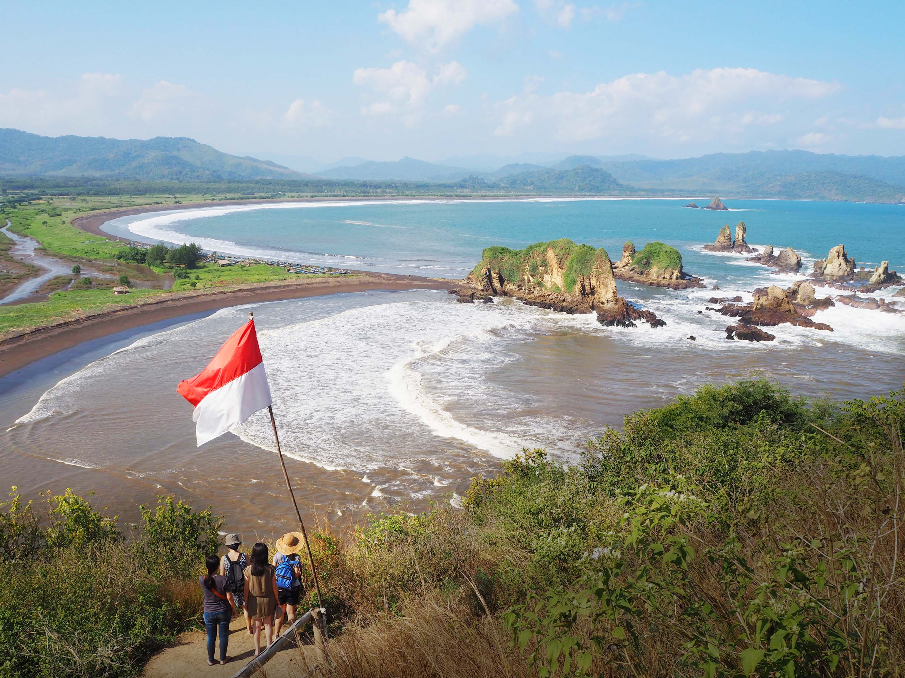

My Hometown
Jember, The Tobacco City
Jember is a regency in East Java Province, Indonesia, located in the eastern part of Java Island (the Tapal Kuda region). With its capital in Jember City, this area is known for the diversity of Pendalungan culture, which is an acculturation of Javanese and Madurese cultures.
This city has a long history of tobacco cultivation since 1859 and is one of the largest producers of tobacco and internationally recognized cigars.
- ProvinceEast Java
- NicknameTobacco City
- IconJFC (Jember Fashion Carnival)
